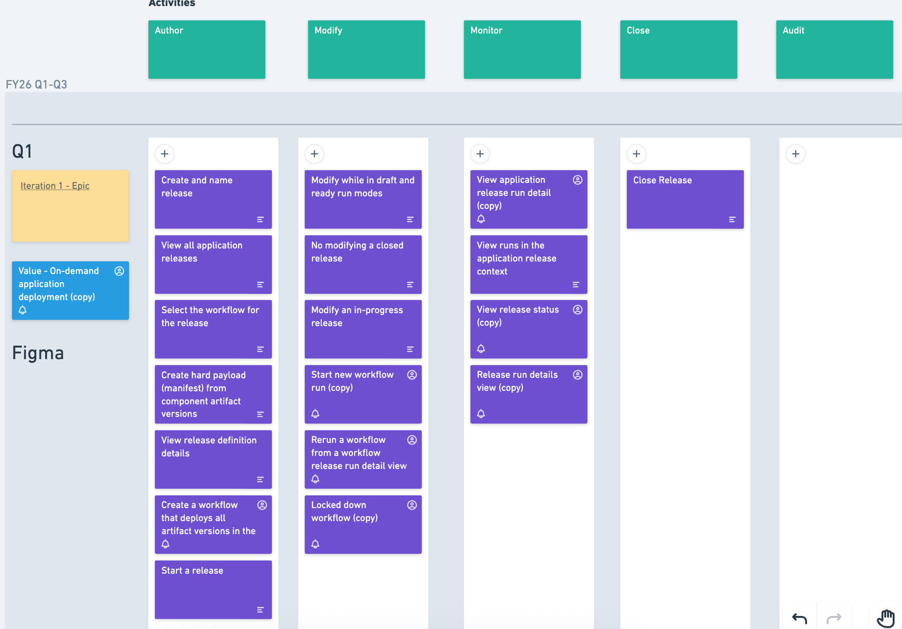
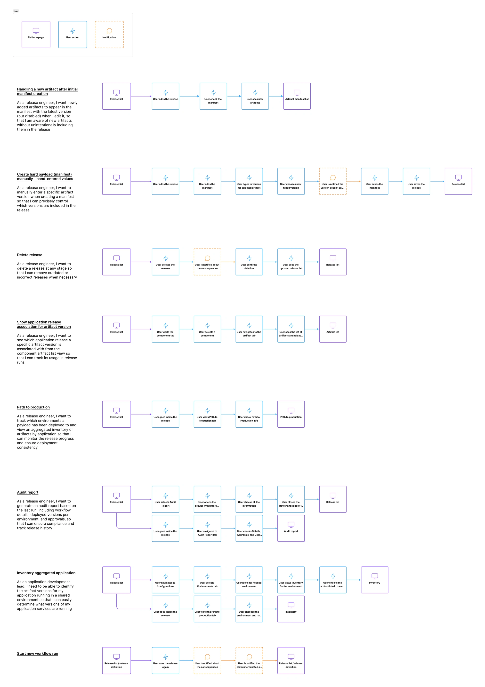
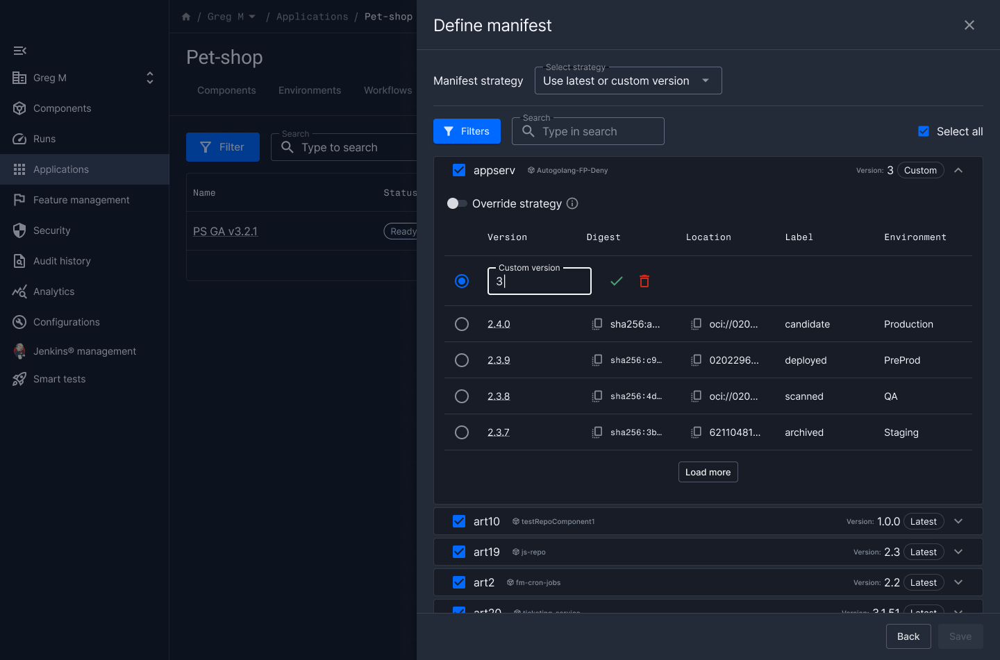
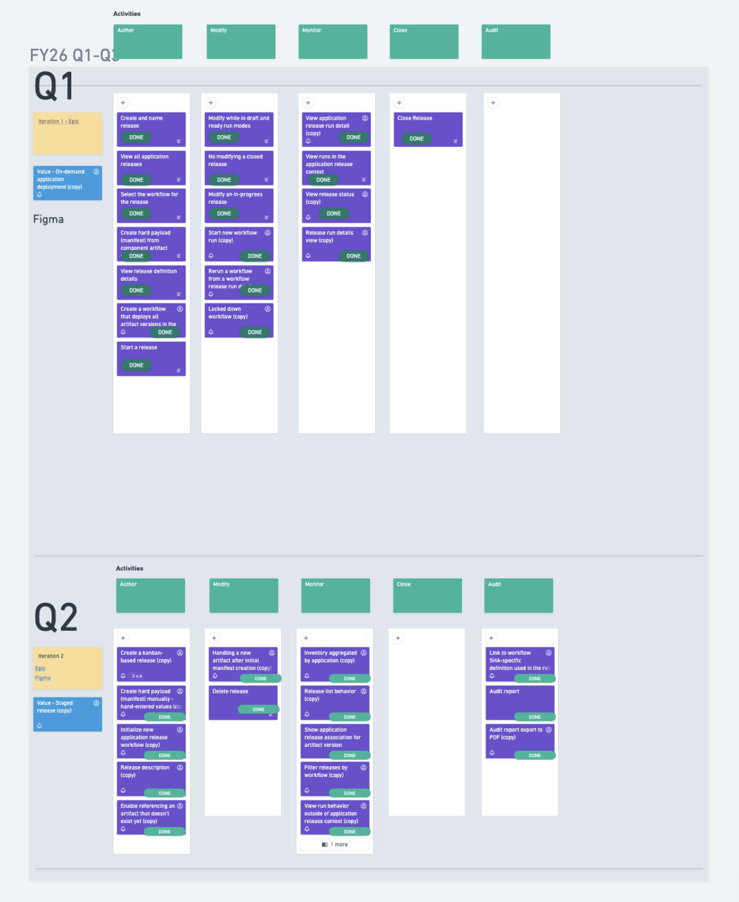
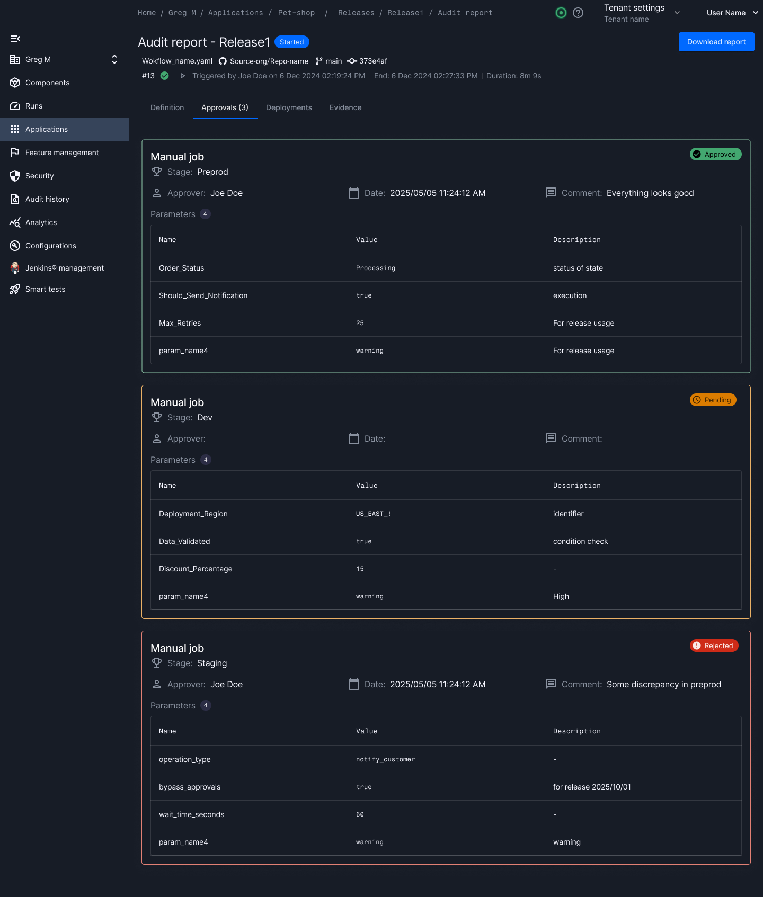

The platform had no way to track a release from planning to production — teams were flying blind.
Designing a complete release process from scratch — manifest creation, workflow execution, traceability, and audit — as the sole designer across two shipped phases.
Solo UX/UI Designer
PM, Solution Architect, Engineering Manager, 6 developers
Phase 1: 6 weeks, Phase 2: 3 weeks
Moderated qualitative user testing
Background
In software delivery, a release is a versioned collection of specific binaries and configuration that get deployed to production. Our platform's Application object didn't capture that process end-to-end — creating gaps in planning, execution order, visibility, and audit.
Teams had no structured way to define what's in a release, track its progress, or prove what shipped. Everything was tribal knowledge and manual tracking.
Goals
- Create and track releases with clear list and detail views
- Compose a manifest from artifact versions, with placeholders for not-yet-published artifacts
- Run and monitor workflows with progress visibility, gating, and reruns
- Full traceability and audit: application to artifact versions, environment updates, durable close-out record
- Scheduling and timing: cadence planning, on-schedule/late signals, deployment analytics
Phase 1 — Core Capabilities
The first phase focused on getting the fundamental release lifecycle in place: create, define, execute, close.
Collaborated with PM and Solution Architect to write and refine user stories
Mapped core user flows: create/edit/delete release, define manifest, access details, start/close release
Designed high-fidelity mockups and iterated with engineering on feasibility

Phase 2 — Traceability & Flexibility
While Phase 1 entered development, design work began on Phase 2 — deepening traceability and extending manifest flexibility.
- Release traceability and audit report — full record of what shipped and when
- Manual artifact version entry — support for versions that don't exist yet in the system
- Workflow parameter references — connect release data to deployment automation
- Cross-feature integration — release references in component artifact tables and environment inventory

Key Design Decisions
Manifest with free-form placeholders
Allow users to enter artifact versions manually, even if the version doesn't exist in the system yet.
Real release planning happens before all builds are complete. Forcing users to wait for published artifacts would break their workflow. Placeholders keep planning fluid.

Phased delivery over big-bang launch
Ship core CRUD + execution first, then layer traceability and audit in Phase 2, with scheduling planned for Phase 3.
Teams needed basic release tracking immediately. Waiting for the full vision would have delayed value by months. Each phase builds on the previous without rework.

Durable close-out record for audit
When a release is closed, capture a permanent snapshot of what was deployed, who approved it, and what evidence was attached.
Enterprise teams need audit trails for compliance. A mutable release record isn't trustworthy — the close-out must be immutable and exportable.

Outcome
Both phases shipped successfully. Moderated user testing confirmed the design worked — participants consistently completed tasks and specifically called out manifest flexibility and status visibility as highlights.
What I Took Away
Designing a greenfield capability taught me that the hardest part isn't the UI — it's scoping. Saying "not yet" to Phase 3 features while stakeholders pushed for everything at once required constant alignment with PM and engineering. The phased approach proved right: each delivery built user trust and informed the next phase's priorities.